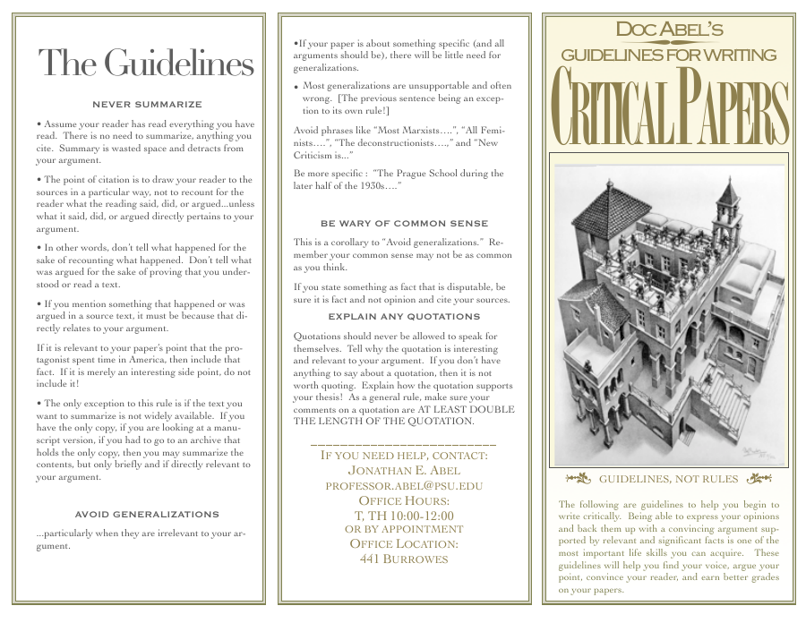
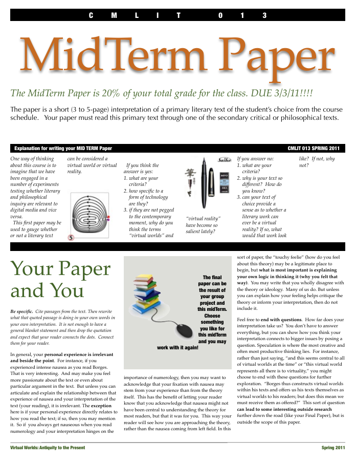

DOCS/LINKS
Click here to go to the GOOGLE SITES WIKI PAGE
CLICK HERE TO SIGN UP for GROUPS AND TO BE A DISCUSSION LEADER
CLICK HERE FOR HANDY REFERENCES
Course Documents, GuideLines, And References

Download a syllabus pdf here. But note that this website is more current than the syllabus.
Download paper guidelines here.


Download the Group Project Guidelines
Download MidTerm paper Assignment